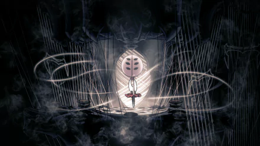

ASCENDA AO PICO DE UM REINO ASSOMBRADO


A caçadora letal Hornet se encontra sozinha em um reino vasto e desconhecido.
Ela deve lutar contra inimigos, procurar aliados e resolver mistérios enquanto ascende em uma peregrinação mortal ao pico do reino.
Limitada por sua linhagem e guiada por ecos de seu passado, Hornet se aventurará por grutas cobertas de musgo, florestas de corais e cidadelas brilhantes para desvendar um fio mortal que ameaça esta estranha nova terra.
O Hornet deve dominar um novo conjunto de movimentos poderosos para sobreviver. Ela desencadeará ataques devastadores, aprenderá incríveis habilidades de seda e criará ferramentas mortais para superar os desafios do reino.
Mais de 200 inimigos ferozes estão entre o Hornet e a cidadela brilhante que coroa o reino. Feras e caçadores, assassinos e reis, monstros e cavaleiros - o Hornet deve enfrentá-los todos com bravura e habilidade!
O vasto mundo interconectado de Hollow Knight: Silksong é trazido vividamente à vida em um estilo 2D tradicional feito à mão. Cidades douradas, lagos de fogo e pântanos enevoados são ilustrados em detalhes requintados, todos acompanhados por uma trilha sonora orquestral vibrante.
Em sua busca pela verdade por trás de sua captura, Hornet fará amizade com estranhos surpreendentes, descobrirá segredos chocantes e resolverá mistérios antigos em um reino assombrado cheio de maravilhas.